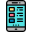

<ion-app>

  <ion-split-pane contentId="main-content" >


    <ion-menu contentId="main-content" type="overlay" swipeEnabled="false" >


      <ion-header >
        <ion-toolbar color="#FFFF" class="imagen" >

          <ion-title class="tab-item"color="light" size="large">  Menu</ion-title>
        </ion-toolbar>
      </ion-header>
      <ion-content padding class="background" >

        
<ion-card >

        <ion-list class="imagen" class="list" class="imagen-list" >

          <ion-menu-toggle auto-hide="false" *ngFor="let p of appPages" class="list" class="imagen">
            
            <ion-item [routerDirection]="'root'" [routerLink]="[p.url]" class="backgound-image" >
              <ion-icon slot="start" [name]="p.icon" > </ion-icon>
              <ion-label class="tab-label" color="dark" >
                {{p.title}}
              </ion-label>
            </ion-item>
          </ion-menu-toggle>
        </ion-list>
</ion-card>


      </ion-content>


    </ion-menu>
    <ion-router-outlet id="main-content" ></ion-router-outlet>
  </ion-split-pane>
</ion-app>
